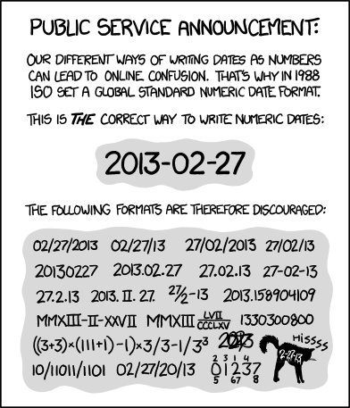

3 Data & Analyses
3.1 Organization
You will create, acquire, and accumulate an enormous amount of files during grad school and much, much more throughout your career. So it is truly imperative to establish a good file naming system and a good folder system for storing everything. The best systems will not only make sense to you, but could also be easily navigable to others. This document is an excellent and simple guide for naming files: Data Science of Marine Conservation

Figure 3.1: Seriously, include the date in your files and use the International Organization for Standardization (ISO) format.
3.3 Analytical tools
I strongly encourage you to use R. Regardless of the programming language you choose, having good data management and workflow is critical.
- Please read this really nice guide:
- Getting started in R:
- Version control: